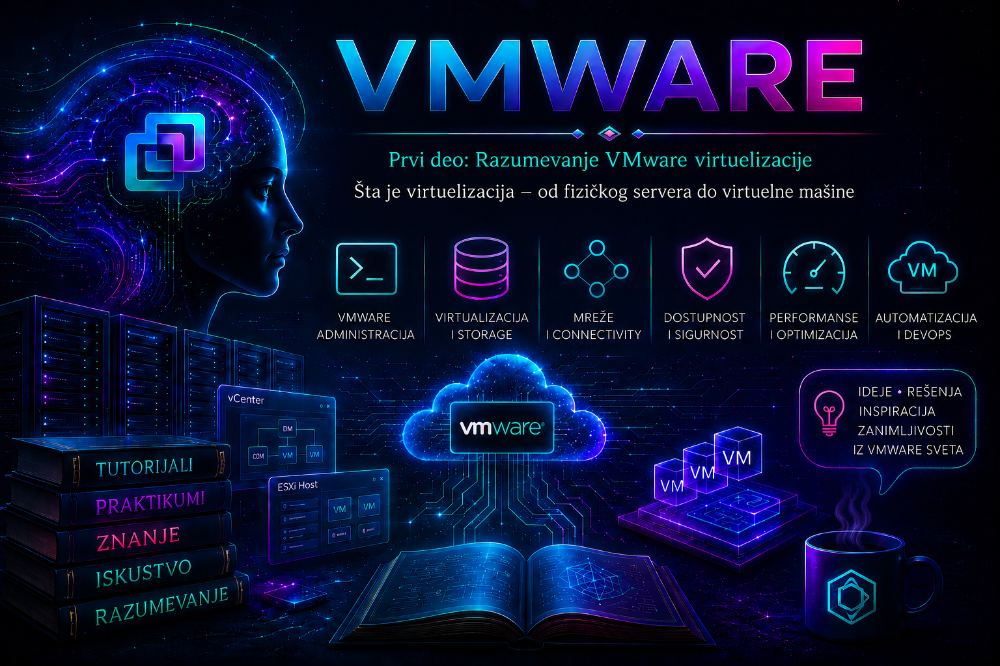

VMware

Virtuelizacija je tehnologija kojom se fizički računarski resursi — procesor, memorija, storage i mreža — apstrahuju, objedinjuju i predstavljaju kao logički resursi dostupni jednom ili većem broju odvojenih sistema. Jedan fizički server zato može istovremeno da pokreće više virtuelnih mašina, a svaka od njih ima sopstveni gostujući operativni sistem, aplikacije, virtuelne procesore, memoriju, diskove i mrežne adaptere.
Najvažnija promena nije samo u tome što „više servera staje u jedan server”, već u odvajanju radnog opterećenja od konkretnog fizičkog uređaja. Fizički hardver postaje skup resursa kojim se upravlja softverski, dok se virtuelna mašina ponaša kao računar sa jasno definisanom konfiguracijom i životnim ciklusom. Na toj apstrakciji kasnije počivaju konsolidacija, kloniranje, migracija, visoka dostupnost, automatizacija i veliki deo privatne cloud infrastrukture.
Ova lekcija uvodi način razmišljanja koji će biti potreban u narednim VMware lekcijama: administrator ne posmatra samo jednu virtuelnu mašinu, već čitav lanac zavisnosti od gosta, preko hipervizora, do fizičkog hosta, mreže i storage-a. Virtuelni objekat može biti logički odvojen, ali njegove performanse i dostupnost i dalje zavise od stvarnih fizičkih komponenti.
Od fizičkog servera do sloja virtuelizacije
Fizički server je računar projektovan za serverska opterećenja. Poseduje fizičke procesore i jezgra, memorijske module, lokalne diskove ili pristup mrežnom storage-u, mrežne adaptere, kontrolere, napajanja i druge komponente. U tradicionalnom modelu na server se instalira jedan operativni sistem, a zatim jedna važna aplikacija ili mali skup tesno povezanih servisa. Operativni sistem neposredno upravlja hardverom i stavlja ga na raspolaganje aplikacijama.
Model „jedan fizički server — jedan sistem” pruža jasnu fizičku izolaciju, ali često dovodi do slabe iskorišćenosti. Organizacija koja ima bazu podataka, poslovnu aplikaciju, veb-servis, sistem za monitoring i dva razvojna okruženja mogla je da nabavi šest ili sedam zasebnih servera, iako bi svaki tokom većeg dela dana koristio samo mali deo procesora i memorije. Plaćaju se nabavka, rack prostor, portovi, napajanje, hlađenje, rezervni delovi, održavanje i zamena svih uređaja, dok višak kapaciteta jednog servera ne može jednostavno pomoći preopterećenom susednom serveru.
Serveri se pritom ne dimenzionišu samo prema prosečnom opterećenju. Potrebna je rezerva za vršne periode, rast, održavanje i kvarove. Zbog toga slaba prosečna iskorišćenost sama po sebi ne dokazuje da je hardver pogrešno izabran, ali veliki broj trajno slabo opterećenih servera ukazuje na prostor za konsolidaciju. Ispravna odluka mora da uzme u obzir vršne vrednosti, licenciranje aplikacija, NUMA arhitekturu, I/O profil, zahteve proizvođača softvera, bezbednosnu izolaciju i poslovni uticaj zajedničkog kvara.
Virtuelizacija uvodi hipervizor, sloj koji kontroliše fizičke resurse i virtuelnim mašinama izlaže standardizovani virtuelni hardver. VMware ESXi je hipervizor tipa 1: instalira se neposredno na podržani serverski hardver, bez opšteg host operativnog sistema između njega i uređaja. Nasuprot tome, desktop proizvodi poput VMware Workstation ili Fusion koriste hipervizorski model namenjen radu iznad host operativnog sistema. Ta razlika utiče na arhitekturu, performanse, upravljanje, bezbednosnu površinu i namenu; laboratorijski desktop hipervizor nije zamena za produkcioni ESXi klaster.
Apstrakcija fizičkih resursa
Apstrakcija skriva složenost fizičke implementacije iza stabilnog logičkog prikaza. Gostujući operativni sistem vidi vCPU, memoriju, virtuelni disk i virtuelni mrežni adapter, ali ne mora da zna na kom se fizičkom jezgru trenutno izvršava instrukcija, kojim fizičkim uplinkom izlazi paket ili na kojim se diskovima storage sistema nalaze blokovi njegovog virtuelnog diska. Hipervizor i povezane infrastrukturne komponente prevode zahteve virtuelne mašine u rad nad fizičkim resursima.
| Fizički sloj | Virtuelni prikaz | Šta administrator mora da proverava |
|---|---|---|
| CPU soketi, jezgra, niti i NUMA čvorovi | vCPU dodeljeni virtuelnoj mašini | CPU usage, CPU ready, co-stop, limit/reservation i NUMA lokalnost |
| Fizička RAM memorija hosta | Konfigurisana memorija gosta | Potrošnja hosta i gosta, reservation, ballooning, compression i swapping |
| Lokalni ili mrežni storage | VMDK/virtuelni disk na datastore-u | Kapacitet, latency, IOPS, throughput, red čekanja, putanje i redundansa |
| Fizički NIC i switch portovi | vNIC, port grupa i virtuelni switch | VLAN, MTU, teaming/failover, uplink zasićenje, gubitak paketa i segmentacija |
Apstrakcija povećava prenosivost i upravljivost, ali ne uklanja fizičku realnost. Virtuelni disk na datastore-u i dalje zavisi od kapaciteta, kašnjenja i dostupnosti storage sistema; vNIC zavisi od virtuelnog switcha, fizičkih uplinkova i mrežne infrastrukture; vCPU mora dobiti vreme na fizičkom procesoru. Kada se rešava incident, administrator zato prati ceo put resursa umesto da pretpostavi da je problem „u VM-u” ili „na hardveru”.
Šta je virtuelna mašina
Virtuelna mašina je softverski definisan računar. Njena konfiguracija opisuje virtuelni hardver, a skup fajlova ili storage objekata čuva konfiguraciju, virtuelne diskove, NVRAM i druge podatke potrebne za rad. Gostujući operativni sistem se instalira kao na fizičkom računaru: detektuje procesore, memoriju, kontrolere, diskove i mrežne adaptere, kreira particije, učitava drajvere i pokreće servise.
VM nije jedan beznačajan fajl koji se može proizvoljno kopirati dok radi. Njeno konzistentno stanje obuhvata konfiguraciju, sve virtuelne diskove, eventualne snapshot lance, stanje memorije ako se ono čuva, identitet u inventaru, mrežnu konfiguraciju i podatke unutar aplikacija. Kopiranje, kloniranje, backup i migraciju treba obavljati podržanim mehanizmima koji održavaju konzistentnost i jedinstvenost identiteta.
Fizički server koji obezbeđuje resurse naziva se host, a operativni sistem unutar VM-a guest ili gostujući operativni sistem. U ESXi arhitekturi izraz „host sistem” ne treba mešati sa klasičnim opštim operativnim sistemom: ESXi je namenski bare-metal hipervizor. VMware Tools, odnosno aktuelni paket open-vm-tools u mnogim podržanim Linux distribucijama, instalira se u gostu i poboljšava integraciju, stanje gosta, sinhronizaciju određenih operacija, drajvere i upravljivost; on nije sam hipervizor niti zamenjuje zaštitu i održavanje gostujućeg OS-a.
Izolacija i zajedničke zavisnosti
Virtuelne mašine su logički izolovane. Pad ili restart jednog gosta u normalnim okolnostima ne restartuje druge goste, a svaki sistem ima sopstvene procese, korisnike, adresni prostor i virtuelne uređaje. Izolacija omogućava da različiti operativni sistemi i aplikacije dele host bez neposrednog mešanja njihovog softverskog stanja.
Izolacija ipak nije apsolutna nezavisnost. Sve VM-ove na hostu dele fizičke procesore, memoriju, mrežne uplinkove, napajanje i često storage putanje. Kvar hosta može istovremeno zaustaviti sve njegove VM-ove; zagušenje datastore-a može usporiti veliki broj nepovezanih aplikacija; pogrešna VLAN ili distributed switch promena može prekinuti saobraćaj čitavog segmenta. Bezbednosni propust hipervizora, pogrešno delegirane privilegije ili kompromitovan administratorski nalog ima širi blast radius od problema unutar jednog gosta.
Produkcioni dizajn zato kombinuje izolaciju sa redundansom i upravljanjem rizikom: više kompatibilnih hostova, redundantno napajanje i mreža, odgovarajući storage dizajn, kontrolu pristupa, zakrpe, backup, monitoring i dokumentovane procedure oporavka. Ne treba postavljati sve instance istog kritičnog servisa na isti host ili u isti failure domain ako bi jedan kvar oborio celu uslugu.
Konsolidacija servera i odluka šta virtualizovati
Konsolidacija je premeštanje radnih opterećenja sa većeg broja zasebnih fizičkih servera na manji broj snažnijih virtuelizacionih hostova. Ona može povećati iskorišćenost hardvera, skratiti vreme isporuke servera i pojednostaviti standardizaciju, ali cilj nije najveći mogući broj VM-ova po hostu. Cilj je održiv odnos cene, performansi, dostupnosti, licenciranja i operativnog rizika.
Kandidat za virtuelizaciju procenjuje se prema procesorskom, memorijskom, storage i mrežnom profilu, zahtevima za kašnjenje, hardverskim uređajima, podršci proizvođača aplikacije, načinu licenciranja, RPO/RTO zahtevima i bezbednosnim pravilima. Radno opterećenje sa ekstremno niskim latency zahtevom, nepodržanim fizičkim uređajem, specifičnim licencnim vezivanjem ili regulatornom obavezom može zahtevati poseban dizajn, passthrough uređaj ili ostanak na fizičkom sistemu. Virtuelizacija je podrazumevano snažna opcija, ali nije automatski najbolja za svako opterećenje.
Virtuelizacija procesora
vCPU predstavlja izvršni kontekst koji hipervizor raspoređuje na fizičke procesorske resurse. Gost vidi broj konfigurisanih vCPU-a, ali oni nisu trajno vezani za jednaka fizička jezgra. ESXi scheduler raspoređuje rad više VM-ova, uzimajući u obzir prioritet, shares, reservation, limit, topologiju procesora i NUMA arhitekturu.
Dodeliti više vCPU-a nije uvek poboljšanje. Velika VM može duže čekati da potrebni procesorski resursi budu raspoloživi, može preći granice NUMA čvora i povećati contention. Administrator zato polazi od realnog zahteva, prati proseke i vršne vrednosti, CPU ready i aplikaciono vreme odziva, pa tek onda menja konfiguraciju. Visok guest CPU usage može značiti da aplikaciji treba više procesora, dok visok CPU ready uz umeren guest usage ukazuje da VM čeka na zauzetom hostu; ista korisnička tegoba zahteva različitu korekciju.
Virtuelizacija memorije
Svakoj VM se konfiguriše količina memorije koju vidi gost, dok ESXi mapira gostujuće memorijske stranice na fizičku memoriju hosta. Memorija se može dodeljivati efikasnije nego u modelu fizičkog servera, ali nema beskonačnog kapaciteta. Reservation garantuje deo fizičke memorije VM-u, limit ograničava potrošnju, a shares utiču na relativni prioritet kada nastane contention.
Kada host uđe u pritisak memorije, mogu se aktivirati tehnike reclamation-a kao što su ballooning, compression i hypervisor swapping. One imaju različit trošak, a swapping na nivou hipervizora može ozbiljno povećati kašnjenje jer ESXi nema aplikacioni kontekst za izbor stranica. Guest swapping je takođe znak pritiska unutar OS-a. Ispravna analiza koreliše active/consumed memory, balloon, compression, swap in/out, stanje gosta i latency aplikacije; samo broj „dodeljenih GB” nije dovoljan dokaz.
Virtuelizacija storage-a
Gost vidi virtuelni disk, najčešće predstavljen VMDK objektom, preko virtuelnog kontrolera. Virtuelni disk se nalazi na datastore-u koji ESXi pruža iz lokalnog ili deljenog storage-a, kao što su VMFS, NFS, vSAN ili drugi podržani tipovi. Gost disk particioniše i formatira uobičajeno, ali put jedne I/O operacije obuhvata aplikaciju, guest filesystem, virtuelni kontroler, hipervizor, datastore, storage protokol, putanju i fizičke medije.
Thin provisioning štedi početno zauzeće kapaciteta, ali uvodi obavezu pažljivog nadzora: logički dodeljen prostor može biti veći od fizički raspoloživog, a neočekivani rast više diskova ili snapshot delta fajlova može napuniti datastore. Thick format rezerviše prostor drugačije, ali izbor formata sam po sebi ne garantuje performanse. Administrator prati slobodan kapacitet, latency po slojevima, IOPS, throughput, queue depth, multipathing i alarme; proširenje virtuelnog diska ne rešava nedostatak prostora unutar particije ili filesystem-a dok se i oni kontrolisano ne prošire.
Virtuelizacija mreže
VM koristi virtuelni mrežni adapter povezan sa port grupom na standardnom ili distribuiranom virtuelnom switchu. Virtuelni switch prosleđuje saobraćaj između VM-ova na istom hostu ili prema fizičkoj mreži preko uplink adaptera. VM može imati jedan ili više vNIC-ova i pripadati različitim segmentima, ali bezbednost ne treba zasnivati samo na tome što su interfejsi „virtuelni”. Potrebni su ispravni VLAN-ovi, firewall pravila, mikrosegmentacija kada je predviđena, kontrola promiscuous/MAC postavki i najmanje privilegije za mrežne promene.
Troubleshooting prati put paketa: stanje vNIC-a u gostu, IP konfiguraciju i rute, firewall, port grupu, VLAN ID, virtuelni switch, active/standby uplink, fizički switch port, MTU i odredišnu mrežu. Ping može potvrditi samo deo puta i ne dokazuje da aplikacioni port, DNS, povratna ruta ili potreban MTU rade ispravno.
Virtuelni hardver i kompatibilnost
Konfiguracija VM-a može sadržati virtuelni firmware, vCPU, memoriju, kontrolere, diskove, vNIC-ove, TPM, grafičke i druge uređaje. Nivo kompatibilnosti virtuelne mašine, često nazvan virtual hardware version, određuje koje virtuelne hardverske funkcije i maksimume VM može koristiti i sa kojim ESXi verzijama može raditi. Viši nivo nije samo „noviji format”: njegovo podizanje može ograničiti povratak ili migraciju na starije hostove.
Zbog toga se kompatibilnost ne nadograđuje rutinski bez provere matrice interoperabilnosti, podrške gostujućeg OS-a, VMware Tools-a, backup proizvoda, DR lokacije i mogućnosti rollback-a. Za vSphere 8 i vSphere 9 postoje različiti nivoi i maksimumi; tačne vrednosti treba proveriti u dokumentaciji za konkretno izdanje i patch nivo, a ne prenositi iz drugog okruženja.
Kreiranje, kloniranje i životni ciklus
Nova VM se može kreirati ručno, kloniranjem postojeće mašine ili iz template-a. Ručno kreiranje je korisno za učenje i nestandardne potrebe, dok template ubrzava standardizovanu isporuku. Klon nije bezbedan obrazac dok se ne reše jedinstveni identiteti: hostname, IP adresa, machine ID, direktorijumsko članstvo, aplikacioni ključevi, sertifikati i monitoring identitet mogu izazvati konflikt ako se kopija samo uključi.
Životni ciklus počinje zahtevom i vlasništvom, obuhvata klasifikaciju podataka, dimenzionisanje, izbor mreže i datastore-a, kreiranje, instalaciju, hardening, backup, monitoring, zakrpe, promene i periodičnu proveru potrebe. Završava se kontrolisanim gašenjem, čuvanjem ili brisanjem podataka prema politici, uklanjanjem iz backup-a, monitoringa, DNS-a i CMDB-a, te oslobađanjem licenci i resursa. VM bez vlasnika, svrhe, roka pregleda i politike zaštite predstavlja tehnički dug.
Migracija, vMotion i visoka dostupnost
Virtuelna mašina se može premeštati između hostova ili datastore-ova podržanim migracionim postupcima. VMware vMotion omogućava migraciju aktivne VM između kompatibilnih hostova uz vrlo kratku završnu pauzu, dok Storage vMotion premešta njene diskove između datastore-ova. Preduslovi zavise od verzije, mreže, kompatibilnosti CPU-a, storage pristupa, konfiguracije VM-a i licence ili paketa mogućnosti. Migracija nije isto što i oporavak: pogrešna konfiguracija gosta ili korumpirani podaci sele se zajedno sa VM-om.
vSphere HA nadzire hostove i, kada odgovarajući klaster, kapacitet i zavisnosti postoje, može restartovati pogođene VM-ove na preživelim hostovima. To smanjuje prekid, ali ne čuva kontinuirano izvršavanje svake aplikacije i ne zamenjuje aplikacioni klaster. RTO obuhvata detekciju kvara, HA odluku, podizanje gosta i oporavak aplikacije. Ako su svi hostovi zavisni od istog ne redundantnog storage-a ili mrežnog elementa, HA ne može ukloniti taj zajednički uzrok kvara.
Snapshot: kratkotrajna tačka povratka, ne backup
Snapshot čuva tačku stanja VM-a tako što nastavlja upise u delta diskove, dok bazni disk ostaje deo istog zavisnog lanca. Po želji može uključiti memorijsko stanje, a uz podržane alate može pokušati quiescing gosta. Snapshot je koristan pre kratke, kontrolisane promene kada je potreban brz rollback, ali nije nezavisna kopija podataka i nije zamena za backup. Gubitak datastore-a može istovremeno ukloniti bazni disk i snapshot lanac.
Dugotrajni ili veliki snapshot-i troše kapacitet, povećavaju I/O složenost i mogu produžiti konsolidaciju. Tokom određenih faza kreiranja ili konsolidacije VM može biti kratko „stunned”, pa visoko I/O opterećenje i spor storage povećavaju rizik primetnog prekida. Za baze podataka snapshot nije automatski transakciono konzistentan niti baza-svestan backup. U produkciji se koriste kratko, uz slobodan prostor, dogovoreni period promene, nadzor zadatka i proveru da je lanac nakon validacije uklonjen i konsolidovan.
Overcommitment i contention
Overcommitment znači da je VM-ovima logički dodeljeno više određenog resursa nego što ga host može svim VM-ovima istovremeno fizički pružiti. Kontrolisani CPU overcommit može biti efikasan jer opterećenja retko dostižu vrh u istom trenutku; memory overcommit i thin-provisioned storage zahtevaju stroži nadzor jer pritisak memorije ili nestanak prostora mogu imati teške posledice.
Overcommit nije sam po sebi greška, ali postaje rizičan kada počiva na proseku bez sezonskih vrhova, kada nema alarma i rezervnog kapaciteta ili kada su kritične VM-ove bez reservation-a izložene bučnom susedu. Kapacitet se planira i za kvar hosta: klaster koji radi udobno dok su svi hostovi zdravi može u N+1 stanju postati preopterećen upravo tokom incidenta.
VM sprawl i operativna disciplina
Brzo kreiranje VM-ova lako vodi u VM sprawl — nekontrolisan rast sistema bez jasnog vlasnika, svrhe, dokumentacije ili roka uklanjanja. Ugašena VM i dalje može zauzimati datastore, backup prostor, licencu i vreme administratora; napuštena uključena VM može ostati nezakrpljena i postati bezbednosni rizik.
Prevencija obuhvata katalog standardnih konfiguracija, obavezne metapodatke i oznake, odobrenje, vlasnika, rok pregleda, kvote, monitoring, politiku snapshot-a, CMDB i kontrolisanu dekomisiju. Automatizacija treba da primenjuje te politike, a ne samo da ubrzava kreiranje novih objekata.
P2V, V2V i savremeni pristup migraciji
P2V je konverzija fizičkog sistema u virtuelnu mašinu, dok V2V označava konverziju između virtuelnih platformi ili formata. Migracija mora da obuhvati inventar aplikacionih zavisnosti, podržani gostujući OS, firmware BIOS/UEFI, particije i boot režim, drajvere, mrežni identitet, licenciranje, plan sinhronizacije podataka, period prekida, test, rollback i poslovnu validaciju.
VMware vCenter Converter Standalone je kroz istoriju više puta menjao status i verzijsku podršku. Stare verzije, naročito Converter 6.2, ne treba koristiti kao podrazumevano rešenje za savremeni vSphere 8/9 cilj. Za konkretan projekat proveravaju se aktuelno izdanje Converter-a, matrica podrške izvornog OS-a i ciljnog ESXi/vCenter okruženja, EFI i virtual hardware zahtevi, kao i KB članci za poznata ograničenja. Ako direktna konverzija nije podržana, često je bezbednije izgraditi novu standardizovanu VM, instalirati aplikaciju i migrirati podatke na aplikacionom nivou.
Virtuelna mašina, emulacija i kontejner
Virtuelizacija i emulacija nisu sinonimi. Hardverski podržana virtuelizacija omogućava gostu odgovarajuće arhitekture da se izvršava uz posredovanje hipervizora i hardverskih ekstenzija, dok emulacija softverski oponaša drugi hardver ili arhitekturu i obično ima veći performansni trošak. Pojedine platforme kombinuju tehnike, pa tačan mehanizam treba posmatrati u kontekstu proizvoda.
VM ima sopstveni kernel i kompletan gostujući OS. Kontejneri tipično dele kernel hosta i izoluju procese, filesystem i mrežne prostore, pa su lakši i brže se pokreću, ali imaju drugačiji bezbednosni i operativni model. Kontejneri nisu automatska zamena za VM-ove: u praksi se Kubernetes čvorovi često izvršavaju kao VM-ovi, čime se kombinuju infrastrukturna izolacija i prenosivost virtuelnih mašina sa aplikacionom gustinom kontejnera.
Virtuelizacija kao temelj privatnog clouda i automatizacije
Sama mogućnost kreiranja VM-a još ne čini cloud. Privatni cloud zahteva standardizovane servise, automatizaciju, samouslužni zahtev, politike, merenje potrošnje, kontrolu kapaciteta i upravljanje životnim ciklusom. Virtuelizacija pruža važan infrastrukturni sloj: fizički resursi se udružuju, predstavljaju softverski i izlažu kroz GUI, CLI, PowerCLI i API-je.
Ta osobina vodi ka Infrastructure as Code i DevOps postupcima, ali automatizacija uvećava i dobru i lošu odluku. Pogrešan ručni korak može pogoditi jednu VM, dok pogrešna petlja ili privilegovani API poziv može promeniti stotine objekata. Zato se najpre razume objekat i njegov blast radius, zatim se postupak validira ručno u laboratoriji, potom automatizuje idempotentno uz proveru ulaza, dry-run gde postoji, kontrolu grešaka i audit trag.
Šta virtuelizacija ne rešava automatski
- Backup i oporavak: snapshot nije nezavisna rezervna kopija; potrebni su podržan backup, definisani RPO/RTO i redovno testiran restore.
- Bezbednost: ESXi, vCenter, gostujući OS i aplikacije zahtevaju hardening, zakrpe, kontrolu pristupa, segmentaciju, zaštitu tajni i audit.
- Visoku dostupnost: HA zahteva odgovarajući klaster i rezervni kapacitet, a aplikaciona dostupnost često zahteva zaštitu iznad infrastrukturnog nivoa.
- Performanse: spor ili zasićen zajednički resurs može usporiti više VM-ova; potrebni su baseline, monitoring i kapacitet za kvar.
- Licenciranje i podršku: pravo korišćenja funkcije i podrška aplikacionog proizvođača zavise od konkretnog izdanja, ugovora i matrice kompatibilnosti.
- Upravljanje: bez vlasništva, dokumentacije i životnog ciklusa fleksibilnost prerasta u VM sprawl i tehnički dug.
Praktikum – dokazivanje puta od fizičkog resursa do VM-a
Cilj i kontekst: u kontrolisanoj laboratoriji identifikovati fizički host, virtuelni hardver jedne VM, mapiranje na datastore i mrežu, prikupiti početni performansni baseline i dijagnostikovati bezbedno simuliran problem sa resursima. Vežba ne menja produkcionu infrastrukturu i priprema čitaoca za kasnije lekcije o ESXi hostu, vCenter-u, mreži, storage-u i performansama.
Topologija: jedan laboratorijski ESXi host ili nested ESXi, jedan datastore, jedna port grupa i jedna mala Linux VM. Opcionalno se koristi vCenter Server i administratorska radna stanica sa PowerCLI. Za vežbu je dovoljan lokalni datastore; visoka dostupnost i vMotion nisu cilj ovog praktikuma.
Preduslovi i početno stanje: VM je uključena i stabilna, VMware Tools/open-vm-tools prikazuje stanje Running, nema aktivnih snapshot-a, datastore ima najmanje 20% slobodnog prostora, a administrator ima read-only pristup inventaru. Za opcionalnu konfiguracionu promenu potrebna je privilegija za izmenu VM hardvera i odobren laboratorijski prozor. Zabeležiti naziv VM-a, hosta, datastore-a, port grupe, broj vCPU-a i količinu memorije pre promene.
Procena rizika: read-only provere su niskog rizika. Promena vCPU-a ili memorije može zahtevati gašenje VM-a ako hot-add nije omogućen i podržan; pogrešna mrežna promena može prekinuti pristup; snapshot može potrošiti datastore i zato se u ovoj vežbi ne pravi. Test opterećenja sme se izvršavati samo unutar male laboratorijske VM i prekida se ako host ili datastore pokažu alarm ili ako utiče na drugi sistem.
Vežba 1 – inventar i mapiranje zavisnosti
- U vSphere Client-u otvoriti VM i na kartici Summary zabeležiti host, datastore, guest OS, VMware Tools stanje, mrežu, vCPU i memoriju.
- Otvoriti Configure > VM Hardware i identifikovati virtuelni kontroler, disk, vNIC i nivo kompatibilnosti. Ne menjati konfiguraciju.
- Na hostu pregledati Monitor > Performance za CPU i memoriju, a na datastore-u kapacitet i latency. Izabrati isti vremenski period za sve grafikone.
- Na port grupi ili virtuelnom switchu identifikovati uplink i VLAN. Ako nemate mrežne privilegije, samo zabeležiti vidljive podatke i ne otvarati mogućnost uređivanja.
- Nacrtati zavisnost: VM → host CPU/RAM; VM disk → datastore → fizički/storage sloj; vNIC → port grupa → vSwitch → uplink → fizička mreža.
Očekivani rezultat i validacija: administrator može za svaki virtuelni resurs da pokaže najmanje jednu fizičku ili infrastrukturnu zavisnost. Konfiguracija VM-a ostaje nepromenjena, a u Recent Tasks nema konfiguracionih zadataka koje je pokrenuo učenik.
Vežba 2 – read-only provera kroz ESXi Shell
ESXi Shell/SSH u produkciji treba držati isključenim kada nije potreban i uključivati ga samo prema bezbednosnoj proceduri. Sledeće komande se izvršavaju na laboratorijskom ESXi hostu nalogom sa odgovarajućim privilegijama i samo čitaju stanje:
# Identitet i verzija hosta
vmware -vl
esxcli system version get
# Fizički CPU i memorija hosta
esxcli hardware cpu global get
esxcli hardware memory get
# Registrovane virtuelne mašine i njihovi World ID-jevi
esxcli vm process list
# Datastore-i i fizički mrežni adapteri
esxcli storage filesystem list
esxcli network nic list
Izlaz komandi sačuvati uz datum i vreme. esxcli vm process list prikazuje aktivne VM procese i njihove World ID vrednosti; ne koristiti komande za gašenje procesa. Ako se očekivana VM ne vidi, prvo proveriti da li je uključena i da li je sesija povezana sa pravim hostom.
Vežba 3 – identifikacija virtuelizacije unutar gosta
U Linux gostu izvršiti sledeće read-only komande nalogom koji ima sudo samo za DMI proveru. Dostupnost komandi zavisi od distribucije:
systemd-detect-virt
lscpu | sed -n '/Hypervisor vendor/p;/Virtualization type/p'
sudo dmidecode -s system-manufacturer
sudo dmidecode -s system-product-name
lsblk
ip -br linkOčekivani nalaz u VMware gostu obično identifikuje VMware kao hypervisor ili proizvođača virtuelnog hardvera. Odsustvo jednog podatka ne dokazuje da je sistem fizički: firmware, dozvole, alat ili način izlaganja podataka mogu ograničiti detekciju. Nalaz korelisati sa vSphere inventarom.
Na Windows gostu iste vrste dokaza mogu se prikupiti u PowerShell-u. Komande samo čitaju stanje:
Get-CimInstance Win32_ComputerSystem |
Select-Object Manufacturer, Model, HypervisorPresent,
NumberOfLogicalProcessors, TotalPhysicalMemory
Get-CimInstance Win32_DiskDrive |
Select-Object Model, InterfaceType, Size
Get-NetAdapter |
Select-Object Name, InterfaceDescription, Status, LinkSpeedVežba 4 – PowerCLI inventar i dokaz da konfiguracija nije isto što i potrošnja
Opciono, na administratorskoj stanici sa VMware PowerCLI povezati se na laboratorijski vCenter ili ESXi nalogom sa read-only privilegijama. Ne upisivati lozinku u skriptu ili istoriju komandi; koristiti interaktivnu autentikaciju ili odobren mehanizam čuvanja akreditiva.
Connect-VIServer -Server <vcenter-ili-esxi-fqdn>
$vm = Get-VM -Name '<naziv-laboratorijske-vm>'
$vm | Select-Object Name, PowerState, NumCpu, MemoryGB,
@{N='VMHost';E={$_.VMHost.Name}},
@{N='GuestOS';E={$_.Guest.OSFullName}},
@{N='ToolsStatus';E={$_.ExtensionData.Guest.ToolsRunningStatus}}
Get-HardDisk -VM $vm |
Select-Object Name, CapacityGB, StorageFormat, Filename
Get-NetworkAdapter -VM $vm |
Select-Object Name, Type, NetworkName, MacAddress, ConnectionState
Get-Stat -Entity $vm -Stat cpu.usage.average,mem.usage.average `
-Start (Get-Date).AddMinutes(-30) |
Sort-Object Timestamp
Validacija: NumCpu i MemoryGB opisuju konfiguraciju, dok performansni uzorci opisuju potrošnju tokom izabranog perioda. Jedan trenutni nizak uzorak nije osnova za trajno smanjenje resursa; za produkcionu odluku potrebni su reprezentativan period, poslovni kalendar i aplikacioni kontekst. Po završetku prekinuti sesiju:
Disconnect-VIServer -Server * -Confirm:$falseVežba 5 – bezbedna simulacija CPU contention-a
Ova vežba je isključivo laboratorijska. U maloj Linux VM napraviti kratko kontrolisano CPU opterećenje alatom koji je već odobren u laboratoriji, na primer stress-ng. Ne instalirati paket na produkcioni sistem samo radi testa. Pre početka zabeležiti CPU usage VM-a, CPU ready, stanje hosta i vreme odziva jednostavne komande u gostu.
# Pokrenuti u laboratorijskoj VM; test se automatski završava posle 60 sekundi.
stress-ng --cpu 2 --timeout 60s --metrics-brief
Tokom testa u vSphere Client-u pratiti VM CPU usage i host CPU. Ako je dostupna napredna metrika, posmatrati CPU ready. Očekuje se rast potrošnje unutar VM-a; visok ready se očekuje samo ako postoji contention. Test odmah prekinuti kombinacijom Ctrl+C ako utiče na druge VM-ove, a zatim potvrditi da nema preostalih procesa:
pgrep -a stress-ng || trueRollback: test ima vremensko ograničenje i ne menja VM konfiguraciju. Ako je paket instaliran samo za laboratoriju, ukloniti ga standardnim paket menadžerom tek kada politika laboratorije to zahteva; ne brisati proizvoljno fajlove. Kriterijum oporavka je povratak CPU usage-a i vremena odziva na početni opseg, bez alarma i aktivnih test procesa.
Vežba 6 – troubleshooting scenario: „VM je spora”
Simptom: korisnik prijavljuje da je aplikacija u jednoj VM spora. Obim: najpre utvrditi da li su pogođeni jedan proces, cela VM, više VM-ova na hostu, VM-ovi na istom datastore-u ili čitava mrežna zona. Posledica: zabeležiti poslovnu uslugu, početak incidenta, učestalost i RTO/SLA uticaj pre bilo kakve promene.
- Potvrditi prijavu merenjem vremena odziva i proveriti tačno vreme, poslednje promene, vCenter events, alarms i tasks.
- Proveriti stanje gosta: CPU, memoriju, swap/pagefile, disk queue/latency, filesystem prostor, mrežne greške i aplikacione logove.
- Proveriti VM metrike: CPU usage i ready, memory balloon/swap, virtual disk latency, IOPS i throughput, dropped packets.
- Uporediti druge VM-ove na istom hostu, datastore-u i mreži. Zajednički obrazac pomera hipotezu ka shared resource problemu.
- Proveriti snapshot-e i konsolidaciju, slobodan datastore prostor, backup prozor, storage putanje, uplink stanje i host contention.
- Formulisati jednu proverljivu hipotezu. Ne dodavati nasumično vCPU/RAM, ne restartovati host i ne brisati snapshot fajlove ručno.
- Primeniti najmanju bezbednu korekciju u odobrenom prozoru, pratiti iste metrike i potvrditi oporavak sa korisnikom ili sintetičkim testom.
- Dokumentovati neposredni uzrok, osnovni uzrok, privremeno rešenje, trajnu meru, vlasnika i rok.
| Dokaz | Verovatna grana | Bezbedna sledeća provera |
|---|---|---|
| Visok guest CPU i nizak CPU ready | Aplikacija zaista koristi CPU | Procesi u gostu, aplikacioni profil i trajanje vrha |
| Umeren guest CPU i visok CPU ready | Host CPU contention | Druge VM-ove, host load, limits i raspoloživ klasterski kapacitet |
| Ballooning/swap uz visok latency | Pritisak memorije | Host i guest memory metrike, reservations i radne setove |
| Više VM-ova na istom datastore-u ima visok latency | Shared storage usko grlo ili putanja | Datastore/device latency, queue, path stanje i storage događaje |
| Problem se podudara sa backup-om i konsolidacijom | Snapshot/backup I/O i stun | Tasks/events, snapshot stanje, slobodan prostor i vmware.log |
Za VM-specifične događaje važan je vmware.log u direktorijumu virtuelne mašine na datastore-u; koreliše se sa vCenter Tasks/Events i vremenom prijave. Za host upravljanje i VM operacije relevantni su, zavisno od problema, /var/run/log/hostd.log, /var/run/log/vpxa.log, /var/run/log/vmkernel.log i /var/run/log/vobd.log. Logove prvo prikupljati read-only, u tačnom vremenskom prozoru i sa očuvanom vremenskom zonom. Ne menjati i ne brisati logove; za ozbiljan incident koristiti podržani support bundle i zvanični KB tok.
Administratorske prakse
- Planirati kapacitet prema vrhovima, rastu i kvaru hosta, a ne samo prema prosečnoj potrošnji.
- Za svaku VM evidentirati vlasnika, svrhu, kritičnost, podatke, RPO/RTO, backup politiku, mreže i rok pregleda.
- Primenjivati najmanje privilegije i odvojiti read-only dijagnostiku od prava za promenu konfiguracije.
- Pre promene sačuvati početno stanje i proveriti kompatibilnost, slobodan kapacitet, posledice po HA/DRS, backup i rollback.
- Snapshot koristiti kratkotrajno i namenski; pratiti rast, ukloniti ga nakon validacije i potvrditi da konsolidacija nije potrebna.
- Ne zaključivati iz jedne metrike. Korelisati guest, VM, host, datastore, mrežu, aplikaciju, događaje i poslednje promene.
- Standardizovati template-e i automatizaciju, ali zadržati kontrolu identiteta, tajni, mreže, hardening-a i životnog ciklusa.
- Redovno testirati backup restore; uspešan backup zadatak bez dokazano obnovljivog sistema nije dovoljan.
- Proveravati Broadcom Compatibility Guide, product interoperability, guest OS i vendor support pre nadogradnje ili migracije.
- ESXi Shell i SSH uključivati samo kada su potrebni, vremenski ograničeno i prema audit proceduri.
Završna kontrolna tačka
Lekcija je uspešno završena kada čitalac može da:
- precizno razlikuje fizički server, ESXi host, hipervizor, virtuelnu mašinu i gostujući operativni sistem;
- za vCPU, memoriju, VMDK i vNIC objasni fizičku zavisnost i odgovarajuće metrike;
- objasni koristi i rizike konsolidacije, izolacije, overcommitment-a i thin provisioning-a;
- razlikuje snapshot, klon, migraciju, HA restart i backup, bez obećavanja mogućnosti koju tehnologija ne pruža;
- identifikuje virtuelni sistem iz gosta i potvrdi nalaz u vSphere inventaru;
- izvrši navedene read-only ESXi i PowerCLI provere i prepozna koje komande menjaju stanje;
- dijagnostikuje prijavu „VM je spora” od najmanje invazivnih provera ka kontrolisanoj korekciji;
- dokumentuje simptom, obim, dokaz, neposredni i osnovni uzrok, korekciju, validaciju i rollback;
- objasni kada virtuelizacija nije dovoljna bez redundantnog dizajna, bezbednosti, monitoringa i testiranog oporavka.
Pitanja za proveru razumevanja
- Koji problem rešava sloj apstrakcije i koje fizičke zavisnosti i dalje ostaju?
- Zašto veći broj vCPU-a može pogoršati, umesto poboljšati, odziv VM-a?
- Kako razlikujete visok CPU usage u gostu od visokog CPU ready vremena?
- Koje posledice mogu nastati kada se datastore sa thin-provisioned diskovima prepuni?
- Zašto logička izolacija VM-ova nije zaštita od kvara hosta ili storage-a?
- Koja je razlika između vMotion migracije, HA restarta i aplikacione visoke dostupnosti?
- Zašto snapshot nije backup i zbog čega dug snapshot može ugroziti performanse i kapacitet?
- Koje identitete treba promeniti ili regenerisati pri kloniranju servera?
- Kada je izgradnja nove VM i aplikaciona migracija bezbednija od direktnog P2V postupka?
- Kako biste dokazali da je sporost zajednički storage problem, a ne problem jedne aplikacije?
Zaključak lekcije
Virtuelizacija pretvara fizički server iz uređaja vezanog za jedan operativni sistem u softverski upravljan skup procesorskih, memorijskih, storage i mrežnih resursa. Hipervizor te resurse predstavlja virtuelnim mašinama, a svaki gost dobija sopstveni virtuelni hardver, operativni sistem, aplikacije i životni ciklus.
Apstrakcija donosi konsolidaciju, bržu isporuku, migraciju, standardizaciju i automatizaciju, ali ne čini hardver nevažnim. Naprotiv, ona povećava potrebu da administrator razume zajedničke zavisnosti, failure domain, contention, NUMA, storage latency, mrežni put, kapacitet i posledice svake promene. Jedna loša odluka na deljenom sloju može uticati na mnogo sistema.
Odgovoran VMware administrator zato ne meri uspeh brojem kreiranih VM-ova. Uspeh dokazuje stabilnim performansama, poznatim vlasništvom, kontrolisanim privilegijama, proverljivom zaštitom podataka, rezervnim kapacitetom, testiranim oporavkom i sposobnošću da incident razloži od simptoma do osnovnog uzroka. Sa tim temeljem čitalac je spreman da u sledećoj lekciji detaljnije upozna hipervizor i način na koji on bezbedno i efikasno posreduje između virtuelnih mašina i fizičkog servera.